Question is -
Do you still want to manage your own files, are they worth it?Answer -
From editing text to scanned images I am using HTML as home web. You can center your filing around the end product, presentation.
Has (that's me) is a business solution for home admin to be updated and integrated.Question is -
What is home web.Answer -
Home filing solutions using the same code that works online to organise and manage presentating you writing and documents. It integrates different file types already so is a good method to organise around.Result -
If it time to keep your feet on the ground and your office in date I am making solutions that bring together both. You home office can stay up to date plus have more potential. Is that not also the aim of a business office. Make a start by keeping your best work recorded with printable views as updates.
Home admin solutions Telephone/text 07468898496 - from £15 hourly - Please read on for details
PAGE1: HTML is the meeting point for presentation on the web. Most software works out a way to get to it so is reliable as code and well supported. Rather than apps online to save what you have done for yourself you need to record to accurate journals or files of your own.
Check this live example:-
| [] | name | desc | fileloc |
| 0 | most lost file | I will not lose my favorite compilation again, always storing the most up to date version here | C://users/cuc/lots/more/notlost.docx |
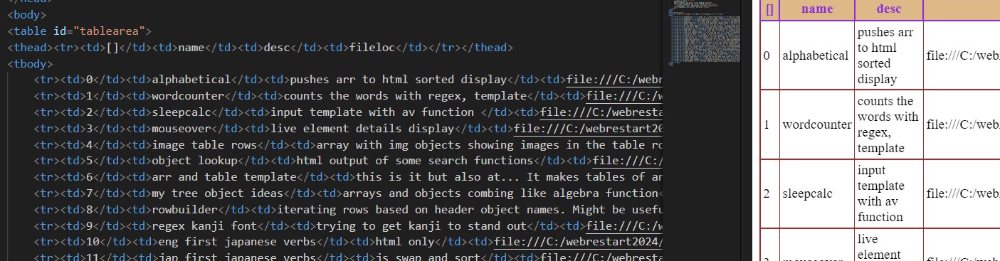
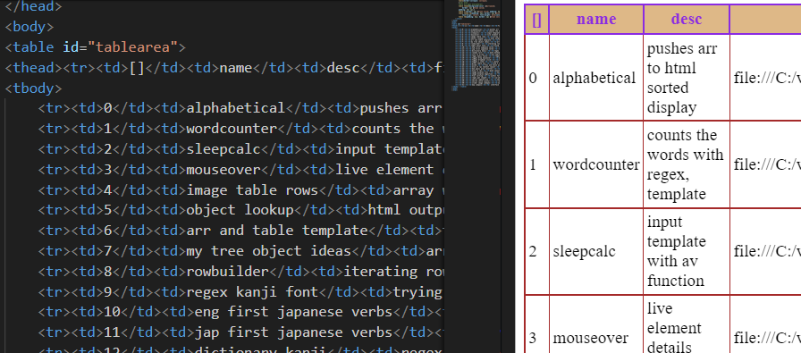
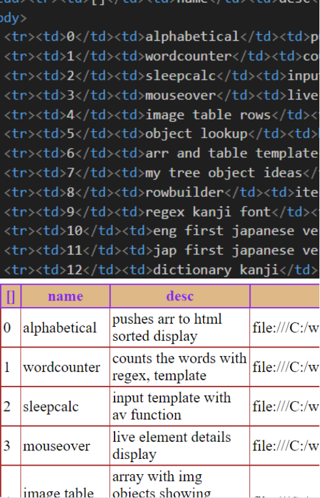
Question -
Why not make this template cut down more tasks. Updating automatically or based upon a date for starters?Answer -
Learning is a challenge and when it is your own office it is best to learn for what you want to do. The next button idea can be suggested by experience. This is to save what you want and will not relate necessarily one time to the next. I am trying to make less files for you rather than more.Question -
Can you add to an old table for any updates?Answer -
I do this manually but easily by saving the table with a date to the file. Further buttons so far have proved to be edit but this one alternates with input as more buttons might impress the maker but not be so intuitive to a user.Result -
A table of more projects than you could follow up for months can be viewed or printed in a single page. I emphasise location above to not lose where my files are as they get more numerous and easily overlap in theme. Adding thumbnails can be business and user friendly since we can quickly follow a picture. Handy details could be attached too like for a restaurant the menu could contain recipes and pictures. You can catalogue your garden and the plants in it for media or personal information. Further details are in the linked editable table.
PAGE 2: This Japanese/English dictionary shows how an interface can work for a project based on organising your file contents. The first letter of the whole word opens the verb using the international phonetic romanji letter sound.
Check this live example:-
- broken, out of order, 壊れます,kowaremasu
- catch fire, ignite,火が付きます,higatsukimasu
- change,変わります,kawarimasu
- choose,選びます,erabimasu
- clear up, sunny (be), 晴れます,haremasu
- cross (arms),組みます,kumimasu
- be employed,雇われます,yatowaremasu
- exchange money,両替します,ryoukaeshimasu
- familiarised, 慣れます,naremasu
- hold out, do one's best,頑張ります,ganbarimasu
- invite,誘います,sasoimasu
- leave (bus),出発します,shupatsushimasu
- lie,噓をします,usowotsukimasu
- lose,失くします, なくします,nakushimasu
- make a racket,騒ぎます,sawagimasu
- need,要る,いります,irimas
- order(restaurant),注文します,chumonshimasu
- paint, do make-up, 塗ります,nurimasu
- park(car),駐車しますう,shushashimasu
- play piano/guitar,弾きます, ひきます,hikimasu
- polish, cultivate, improve, 磨きます, みがきます,migakimasu
- prepare,準備します,junbi-shimasu
- promise,約束します,yakusokushimasu
- pull,引きます, ひきます,hikimasu
- put, turn in(homework), 出します,だします,dashimasu
- put/place,置きます,okimasu
- put on (a hat),かぶります,kaburimasu
- put on (clothes),履きます, はきます,hakimasu
- reject, wave, attach, 振ります,furimasu
- request, ask,頼みます, たのみます,tanomimasu
- refuse, decline断ります,kotowarimasu
- remain, 残ります,nokorimasu
- send,送ります,okuirmasu
- sooth,癒します,iyashimasu
- steal, sneak, 盗みます,nusumimasu
- tidy up,片付けます,katatzukemasu
- try,試します,tameshimasu
- try on,試着,shichaku
Enter the first letter or whole word, choose verb in English or Japanese
While it took me a while to make
the dictionary I think it is a competitive idea. Some would just grab some libraries then import wholesale
into another template but from your own files what do you want to do?
Doing what is needed for what you want to achieve using home data is not what the online apps are doing.
I am using web based integration as the model where different files can access each other or be converted
to do so.
An office tip is to make your own paper for helping you study. Here I have made simple lines to help
study kanji. After a while I figured perhaps I have gone too far using the japanese alphabet studying
since of course I will more quickly still and for a long time use the english one. 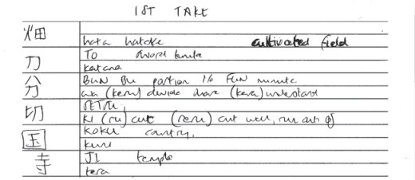 This paper design
prompts the Chinese and Japanese sounds on a different line but does not force you to chose to write
the sounds in English, however it helps keep them separate for study. Get a copy of the lined paper
by opening this page print lines page (opens in new tab)
and then selecting print odd
pages. Wah I hear but print properties are hard and this is an easy solution meantime.
With rehearsal it is quick to make it yourself and helpful to make tools as you need them.
PAGE 3: A process if you are a writer is wordsearch. I can add to any page very easily a wordsearch interface for you to look over your writing. Also to customize for accented letters and case.
Question -
Why would text documents be better presented and stored with this?Answer -
Both presentation and compatability. Wordsearch is a useful customization when editing. HTML to edit with has with great compatibility in you home and for output.Result -
You can manipulate a sizable amount of files and files not managed like this are also easier to sort by how available they are to this method.
Check this live example-
page1- Search and Mark- notes for the diary
1-12-2023
News todayThe 2 wars are not going away. My msn feed suggests the ceasefire is over in Gaza but I think closer searching will show it is not. Articles on heroic women were at least half of the top links. They seemed wrong tbh. Simone de Beauvoir is used to make for a feminist case of heroism and Israeli soldier daring women but seems far from the woman herself once the article began. Then tank squads of all women article seemed stupid since a ceasefire is in place outside this type of article. The other couple of articles focused on Hamas politcal insincerity with some what look to me like all male troups of important and so on men around the leader of said organisation while in the late planning stages for October 7th.
Note how the highlighted 'news' is no longer in the search bar. For some presentation purposes I should change this but I am making things to be useful. The interface come beginner app so far does not need this. There are additional features in creation. I can find uppercase or lowercase which is important and I also can search language documents ignoring the accents.
Home admin solutions Please tell me if you enjoying reading - email in foot
PAGE 4: The search to improve organised time-saving extends to the document layout. Putting an interface in the HTML presentation view is easier than in looking at all the h2 headings in code. You can also scroll in the same page to check your findings.
At a glance:-
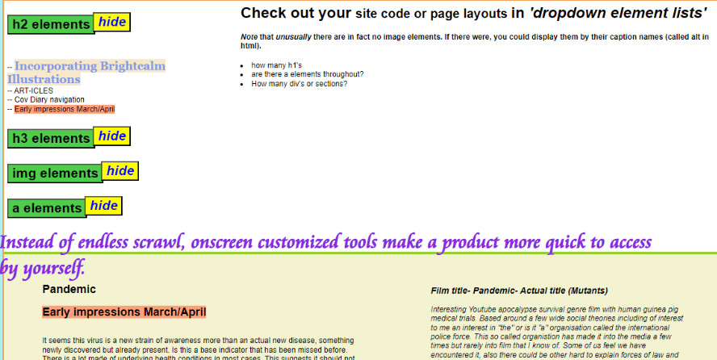
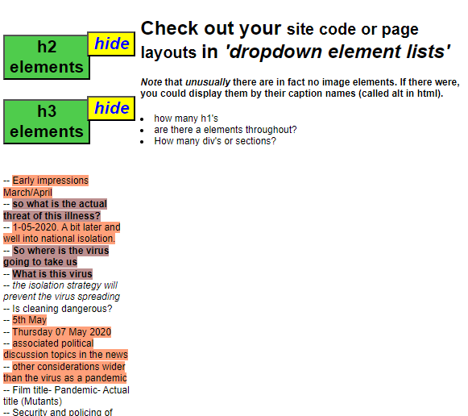
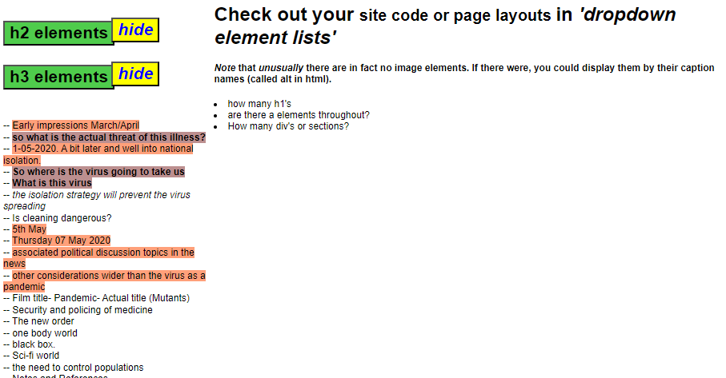
Question -
Popularity of the code is a security risk maybe?Answer -
The offline factor is what I count on here, longevity by the fact it is related to so many apps, outputs, using home web (HTML centred documents) as a practical method. You still need to keep copies and alternatives in mind and 2 machines too I think. As you organise better you already are managing potential repairs. It is easier to cool off too and reconnect when you have put bugs in the system without undue panic with a second pc and a more offline one.Question -
Mainstream software language is accessible to AI so ..Answer -
This is over my knowledge but the better you are at one code then that is surely helpful in undertanding how to learn another if everything gets hacked and taken apart. I am confident that honesty is a better habit than tripping up on your wrong image.
PAGE 5: Improve your home office with tables and charts which serve information to be re-used and updated. I attempt to alter, replace and make original styling in an effective and proficient manner.
At a glance:-
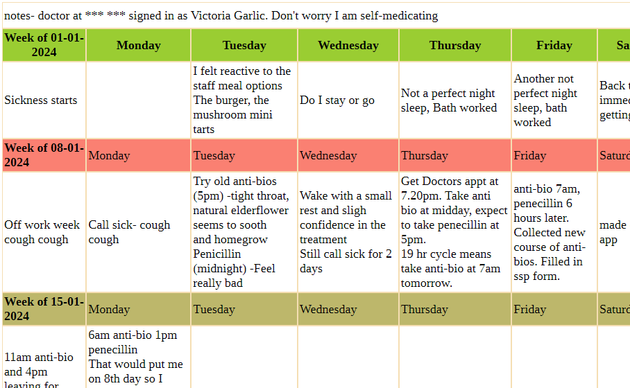
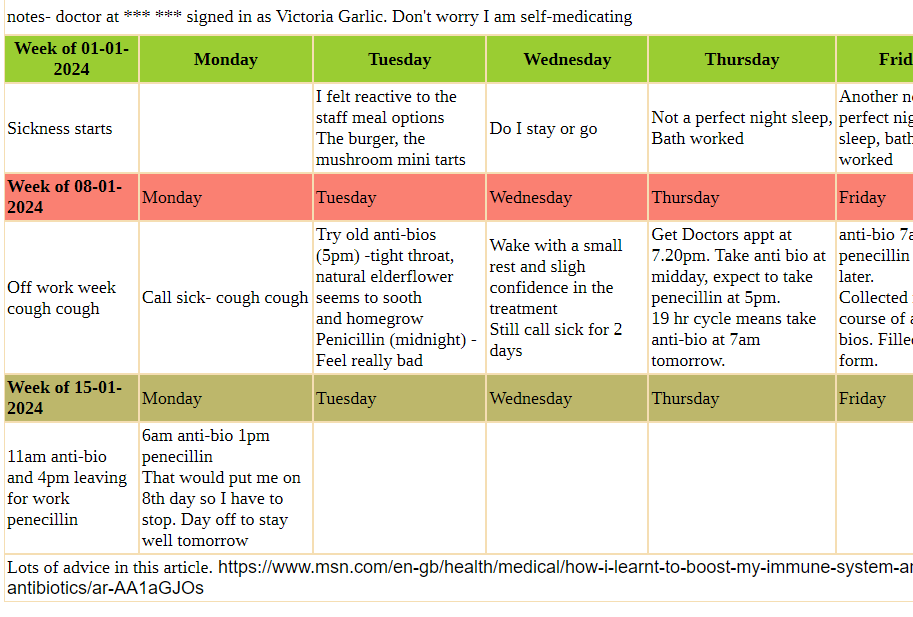
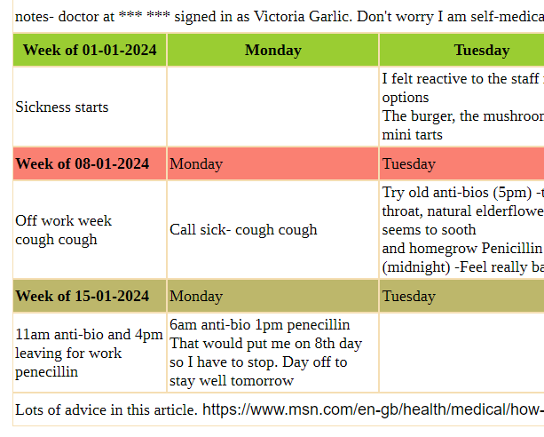
Simple example code:- Hols,, 2023,, 2024, Apr, July My holidays
Table code can be as simple as this. Without being part of a large computing firm or having a Master of Science degree, the advantages of the web focus software on accessible presentation. Were you to be recording your best files in the interface (above) best file location table you can quickly style the copied table.
I am making tools to keep it simple, that are good for a home office solution and I hope are businesslike too.
It is above my skills to know to know security but I follow best awareness practices. Then as advised by domain hosts too whose advice generally is to learn how to tidy up code. However I think learning is my level in a skillful way. Making things that are useful for presentation and record keeping are what I am trying to be intuitive with. If you lose files, can't keep up with editing, I can attach these tools shown here.
Question is -
It's just an image file. Can you use it?Answer -
If you know the file location that made the image. Otherwise it is still easy to copy but slower. A good reason to keep track of your files with something customized like the table file locator interface example. I am making file types connect in the office. Apps can be inaccessible so remember to keep some notes of your own, lots even. A home office network could come out of good practice I think.
At a glance:-
Image only
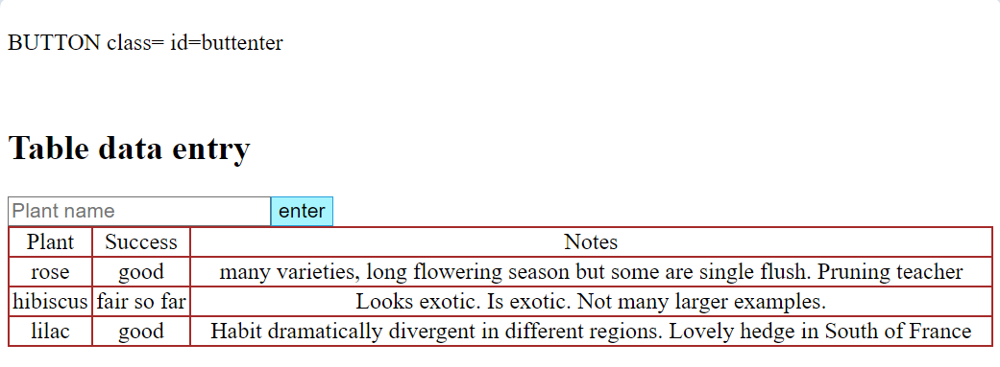

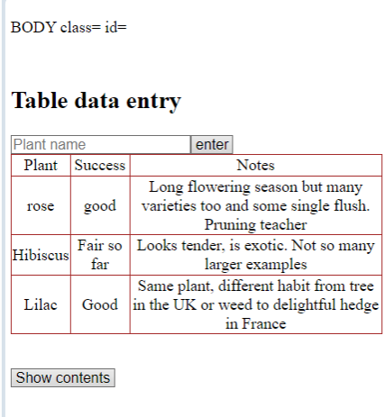
Question is -
Would you would want more buttons for an interface like the impression above.Answer -
As it is a single button enters for all 3 sections in order and then automatically starts a new row. I would want more buttons but only in theory. If you ask me and I can or if I find it important I will develop more but also the editable table worked better just by alternating the same button.Result -
Easy to add tool for an index for any interest which is helped by adding notes or identifying features. In the above table an obvious change for me is editing of mistakes so I have learned it and the model is accurate now for business use and for your webpages to be quickly updated.
Self taught but motivated to do the work required that supports the writer artist community, the home office community...
I want to make office tools. The info out there moves fast and without saving it while working with it you lose it to trust it is still there. For this reason I think it is important to have the information you make at your own fingertips now or the best ability to get it. Editing in mind I made this portfolio pages promotion (opens in new page) which is editing I enjoy refining. I have not found the web to be the source of learning as much as it is exciting so the fine tuning is needed since we are not so much left behind as completely towed in line. Selling courses is a good economic reason but it is exaggerated how much you will learn unless the industry connection is also financial even an accomplished 50k degree student? The jobs that are endless seem very hard to get. I have had to work harder than it looks to get refined working models without a school or colleagues. These integrative/interactive tools manage home or office local solutions. I don't think we should lose track of the benefits that are available at normal prices despite globetrotting fibre speed apps which are uncertain when business needs integrity as do passions and hobbies.
If my examples will assist you and you want to hear more I will try to answer your enquiries with solutions. or
...business minds. I am equally seeking admin, starter IT, software development entry level or creative art and design roles for work.